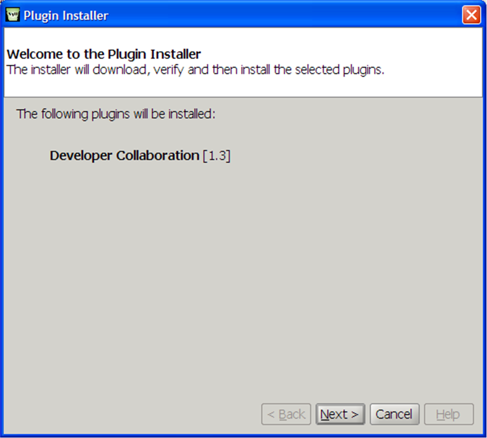
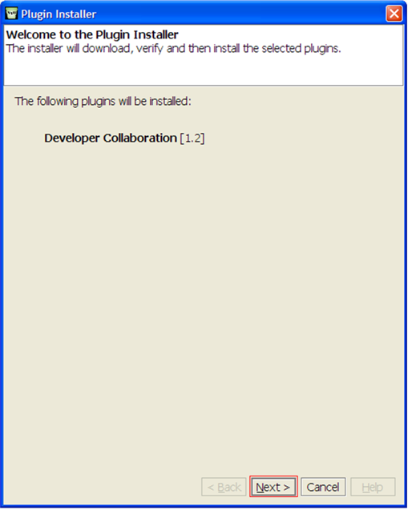
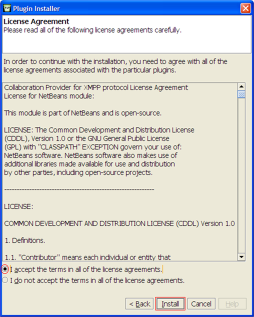
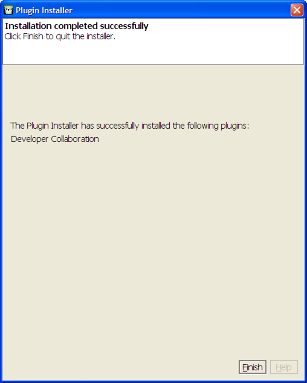
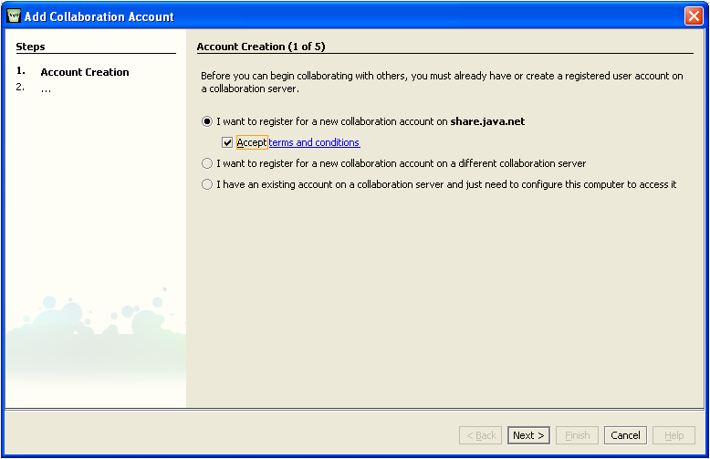
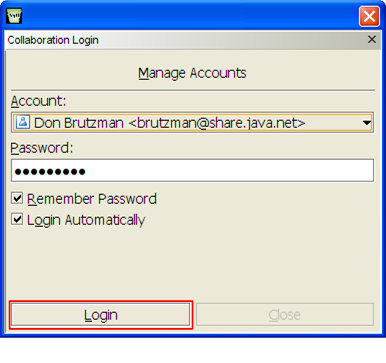
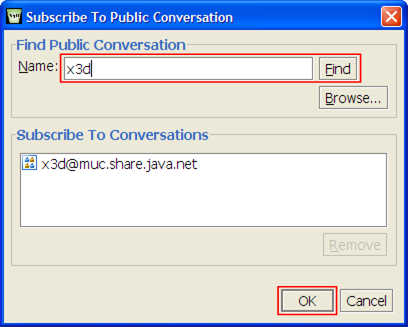
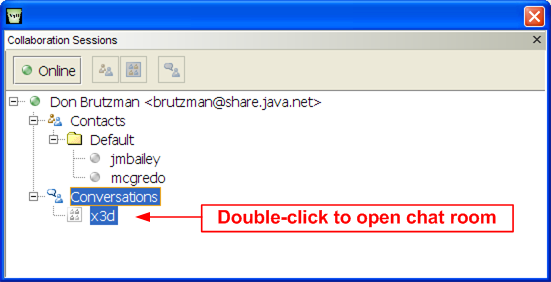
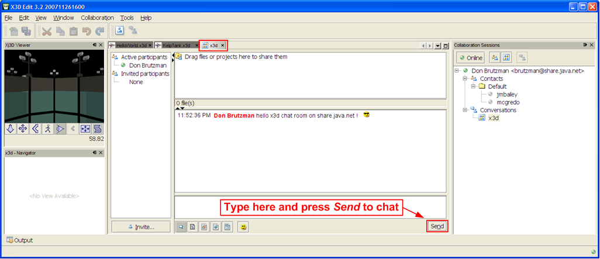
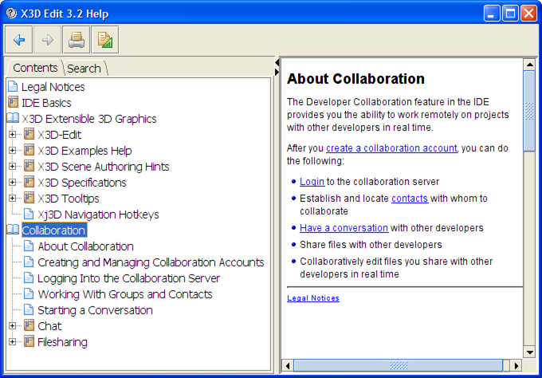

|
X3D-Edit Authoring Tool |
(Editorial note. The XMPP chat plugin is no longer maintained by Netbeans, this page is maintained for historical purposes. Further chat resources can be found on the Savage Developers Guide.)
This page describes how to install the XMPP Chat Collaboration Module in X3D-Edit v3.2. Additional information is within the JavaHelp system, or online at
Known problem: file sharing does not work properly for filename.x3d scenes.
Reported as
Netbeans issue 137234.
1. To install chat collaboration as part of X3D-Edit, first select the Tools > Plugins menu for the Plugins panel, and then select the Available Plugins tab.
Select the checkbox for Developer Collaborator, press the Install button.
2. Confirm that you want to install the Developer Collaboration Plugin:
3. Now acknowledge the Netbeans Plugin License Agreement.
4. Once the download (~9MB) and installation is complete, select Finish:
If needed, further troubleshooting help on plugin setup is available via JavaHelp under Help Contents > IDE Basics > Plugins. Additional help is online at http://plugins.netbeans.org/PluginPortal.
5. Notice that a new Collaboration menu is available for selection. Select menu item Login. Then select Add Account (or connect to an existing account) on share.java.net.
6. You are then prompted for first and last name, username, etc. Once the account is created, log in:
7. Now right-click on Conversations to open the Subscribe To Public Conversation panel . Enter x3d and Find to locate the chat room. Then select OK to join:
8. The collaboration pane should now show any known contacts and open conversations (rooms). Double-click X3D to join the chat room:
9. The x3d chat room itself is now available as another file tab. Type in the bottom box to chat. Drag or select X3D scene files into the top box for file sharing.
10. Users with the Windows Vista operating system may encounter access problems. Please try these additional steps and report if there are any further difficulties.
11. Further help on Netbeans collaboration is available via JavaHelp under Help Contents > Collaboration, and also online at http://collab.netbeans.org.
Also available: additional setup instructions for Vista users .
Questions, suggestions and comments about these resources are welcome. Please send them to Don Brutzman (brutzman at nps.edu)
Uniform Resource Locator (URL) for this page is https://savage.nps.edu/X3D-Edit/XmppChatCollaborationModule.html
Revised 18 February 2008, annotated as inactive 2 January 2013.
"Material contained herein is made available for the purpose of
peer review and discussion and does not necessarily reflect the
views of the Department of the Navy or the Department of Defense."